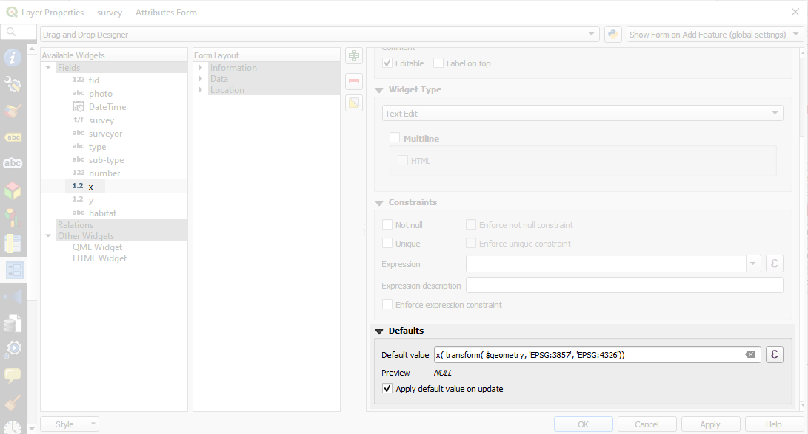
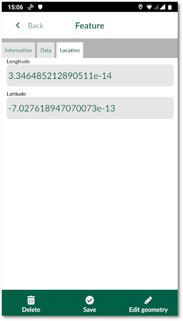

You can set a default value for your fields. The default value can be a text, number or a QGIS expression. In the example below, we are going to set the default values for x and y field to be longitude and latitude.
QGIS
To set up the default value for x field:
- Download and open this example project in QGIS
- From the layer panel, right-click on survey layer and select Properties
- In the new window, select Attributes form

- Select x field under the right column (Available Widgets)
- Under the Widget Display:
- Set the Alias to Longitude
- Under Defaults:
- For Default value type: x( transform( $geometry, ‘EPSG:3857’, ‘EPSG:4326’))
- Select the option to Apply default value on update
Note that the expression transforms the point from EPSG:3857 (map and layer coordinate reference system) to EPSG:4326.
Repeat the same for y field and set the default value to y( transform( $geometry, ‘EPSG:3857’, ‘EPSG:4326’))
Ensure to save and synchronise your project.
Input
To see the default values in Input:
- Open Input on your device and from Projects > Explore download documentation\form_setup
- Open the project
- Select Record and add a point
- The form will appear
- Under Location tab, you can see the default pre-populated values :
